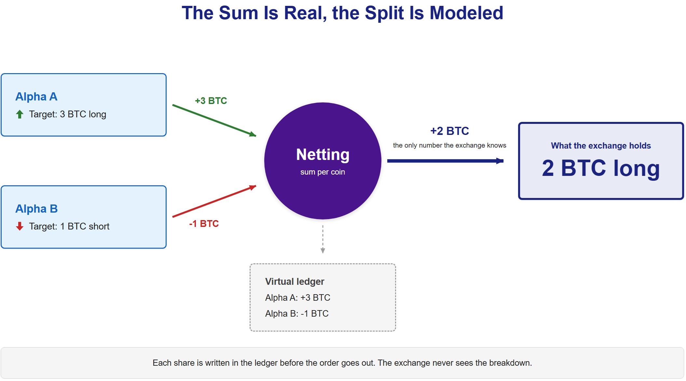
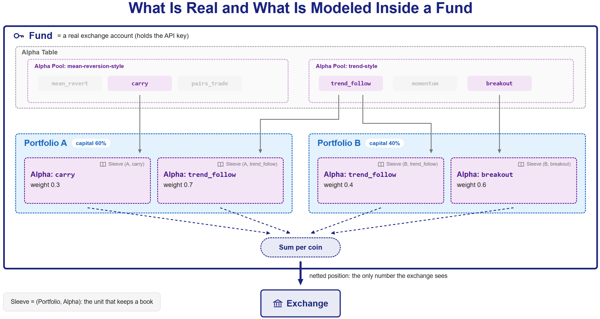
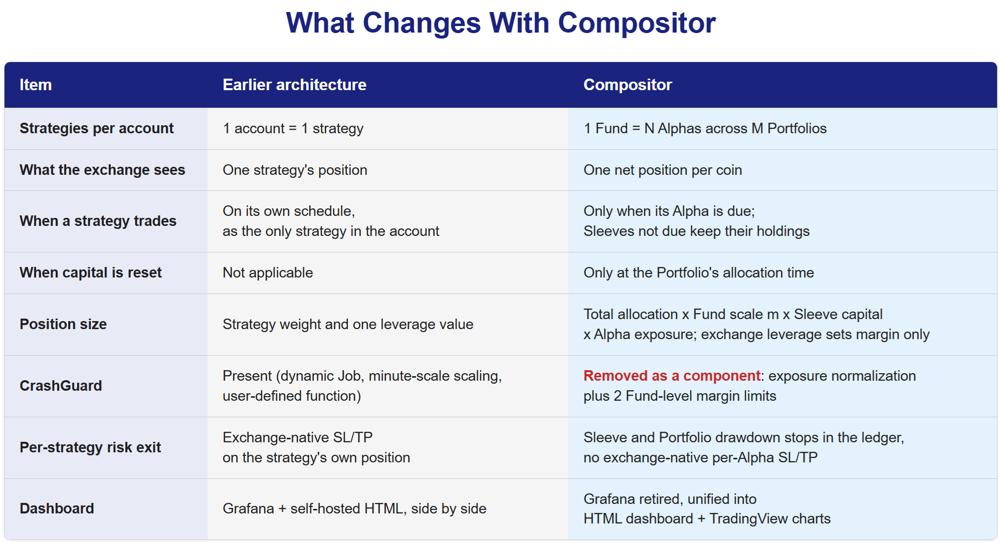

Many strategies share one exchange account, and the exchange sees one net position per coin. Compositor writes down whose share is whose before each order.
Near Manaus, in Brazil, the dark Rio Negro flows into the pale, sandy Solimões, and for about six kilometers the two run side by side in one channel without mixing. They differ in temperature, speed and sediment, so the line between them holds.
An exchange account that runs many strategies only ever shows the merged river: one net position per coin. Compositor, our trading core, is what keeps the colors apart. Before any order goes out, it writes down which strategy owns which share.
The Meeting of Waters near Manaus, Brazil, where the dark Rio Negro and the pale Amazon run side by side for kilometers without mixing. Photo: Dennis G. Jarvis, CC BY-SA 2.0, via Wikimedia Commons.

What Compositor Is, and Isn't
An earlier post walked through LiveSys, our original live trading engine, built on a simple assumption: one exchange account runs one strategy file. That assumption held from the day the engine shipped until very recently. Compositor is the core we built to break it.
Compositor is the layer that lets alphas built in very different ways run reliably on one real account. It says nothing about how good any alpha is. That is a research question, and this post is about the accounting and execution underneath it.
None of the pieces is new. Asset managers have kept sleeve-level accounting for years, including netting trades between sleeves. QuantConnect's algorithm framework separates alpha, portfolio construction, risk management and execution, and passes target positions from one stage to the next. NautilusTrader's execution engine can keep multiple virtual positions against a venue's single net position. What we built is this pattern for a futures account that trades real money, and the rest of this post is about what keeps it honest.
Compositor now carries production. The account that used to trade a single strategy was handed over to it without closing its positions, and the other accounts that each ran one strategy have been consolidated into the same Fund. It is also young, so this post covers what it changes, why, and what still isn't done.
The One-Line Idea
If you take one thing away from this post, take this: the sum is anchored to reality, only the split is modeled.
Here's what that means in practice. An exchange (Bitget, Binance, whichever) only ever sees one thing per coin in an account: a single net position. It doesn't know or care that the number it's looking at is actually the combined output of five different strategies pulling in different directions. Say Alpha A wants to be 3 BTC long, and Alpha B, running in the same account, wants to be 1 BTC short. The exchange never sees either of those numbers. It sees 2 BTC long, the netted-out sum, because that's the only position that physically exists.
Compositor sends one net order per coin each cycle. The account's position mode is a separate exchange setting: Binance documents a one-way mode and a hedge mode, where long and short legs can be held side by side, and Bitget's account API names the same two. Compositor's order path nets whatever the account holds in a coin into one number. The one exception is a reversal, which takes two orders: the old direction is closed first, then the new one is opened.
Everything below that netted sum (which strategy is "responsible" for how much of it, how each one is performing, how capital is split between them) is a virtual ledger. And critically, it's computed forward: the system decides the split first, then executes the sum. It is never reverse-engineered by trying to guess, after the fact, which strategy caused which fill. That distinction is the whole architecture in one sentence.
For anyone reading this who isn't neck-deep in the code: think of it like a single company bank account that the bank statement never breaks down by department. The company's own internal accounting still tracks exactly how much each department contributed and how each one is performing. That bookkeeping is completely real and completely trustworthy; it's just a layer the bank itself never sees.

Two Kinds of Structure
Compositor's six concepts fall into two groups that are easy to mix up. One group is a catalog of strategies. The other is the chain along which capital and results are tracked.
The strategy catalog
- Alpha Table: the full list of alphas registered to a Fund.
- Alpha Pool: a grouping, inside the Alpha Table, of alphas that share similar characteristics.
Capital and accounting
- Fund: a real exchange account, the one that holds the API key. This is the only layer that physically exists on an exchange's books. Everything built on top of it is virtual.
- Portfolio (×M): a virtual book-keeping split of the Fund's capital. A Fund can have any number of Portfolios.
- Alpha: a strategy picked from an Alpha Pool, running inside a Portfolio at some weight. An Alpha is code. It keeps no books of its own.
- Sleeve: the pairing of one specific Portfolio with one specific Alpha (
portfolioId,alphaId). This is the unit that holds a book, and the unit that performance and capital get tracked against. The term itself is borrowed from institutional asset management, where sleeve-level accounting tracks several strategies inside one custodial account with each sleeve's own cash and positions kept separate internally, even though the custodian only ever sees one account-level number.
The analogy the team uses internally is a single bank account with several traders sharing it. That one account is the Fund. It's split among several traders (the Portfolios), each getting a book-keeping share of the account's capital. Nobody gets a separate account. Each trader, in turn, runs several strategies at their own chosen weights. Those are the Alphas, and one trader running one strategy is a Sleeve. But no matter how many traders or how many strategies each one runs, the bank itself only ever sees one net number move in or out of the one real account.
If the same Alpha is selected by two different Portfolios in the same Fund, that is simply two Sleeves: the Alpha's code is shared, but each pairing keeps its own book.

Two Clocks
Two schedules drive everything, and each has its own job.
The first is each Alpha's rebalancing interval. A Sleeve trades only when its own Alpha is due. When it is not due, it keeps exactly the quantity it holds. It is not resized, and it is not re-weighted against the others. One thing overrides this: if a Portfolio's allocation sets a Sleeve's weight to zero, or its selection drops a Sleeve that still holds a position, that Sleeve closes at the allocation time even though its Alpha is not due, and its value goes back to the Portfolio.
The second is each Portfolio's allocation interval. At that time the Portfolio's own selection and weighting code decides how its capital is split among its Alphas, and each Sleeve's capital is reset to that share. Between allocations, a Sleeve's capital moves only with its own profit and loss. Deposits and withdrawals wait as the Portfolio's unallocated cash until the next allocation. When an allocation and a rebalancing fall on the same minute, the allocation goes first, so the Sleeve trades with its new capital. Both clocks tick on fixed grids aligned to the hour.
Each cycle, then, works in two steps. First, every Sleeve states what it wants to hold. Then those holdings are added up per coin, and the Fund sends the gap between that sum and the account's current position as one order per coin. Schematically, and illustrative only, not the literal engine code:
# one cycle, illustrative shape (not literal engine code)
def sleeve_target(sleeve, prices, k):
if not sleeve.is_due or sleeve.failed:
return dict(sleeve.held_qty) # not its turn: keep what it holds
# its turn: the Alpha's exposure, sized by this Sleeve's own capital
return {s: k * e * sleeve.capital / prices[s] for s, e in sleeve.exposure.items()}
def fund_orders(sleeves, account_position, prices, k):
target = {}
for sleeve in sleeves:
for sym, qty in sleeve_target(sleeve, prices, k).items():
target[sym] = target.get(sym, 0.0) + qty
# one net order per coin: the gap between the summed target and the account
return {s: q - account_position.get(s, 0.0) for s, q in target.items()}Here k is the Fund-wide sizing factor described further down.
One Trade, Start to Finish
Take the example from earlier and run one cycle in which both Sleeves are due.
1. Targets, forward. Alpha A's Sleeve targets +3 BTC and Alpha B's Sleeve targets -1 BTC. Both exist before anything is sent. 2. Sum. The two add up to +2 BTC for this coin. A Fund-level margin limit then applies to the Sleeves trading this cycle, described below. 3. Order. The system compares the summed target with what the exchange says the account holds right now. If the account already holds +0.5 BTC, the order is one market buy of 1.5 BTC. 4. Books. Each Sleeve's book is updated to what the exchange filled, at one price for the coin: the volume-weighted average of the account's recent fills in it. When the order fills completely, that is the planned target. 5. Fee. The exchange charges one fee on those 1.5 BTC, and it is split between A and B in proportion to how much each one's position changed.
The interesting cases are the ones where the steps don't line up cleanly.
- A Sleeve that isn't due. It adds exactly its current holding to the sum, so its share of the order is zero. It pays none of the fee, and its book doesn't move. The one exception is a Sleeve that an allocation has just set to zero weight, which closes with that cycle's order and shares its fee.
- An order that never goes out. If the order for a coin is skipped (below the exchange minimum), held back by the margin pre-check, rejected, or never sent, every Sleeve's book stays at its previous quantity for that coin. Their books don't move, because the account didn't. The amount each Sleeve missed is recorded.
- Opposite trades that cancel. If Alpha A buys 1 BTC and Alpha B sells 1 BTC in the same cycle, the net is zero and nothing is sent. Each book still records its own side, A up 1 BTC and B down 1 BTC, with no fee, and the books still add up to what the exchange holds. Netting saves the fee, and the ledger keeps the trade between the two Sleeves.
- A partial fill. Say only 1 BTC of the 1.5 BTC fills. The books hold the filled quantity. Every Sleeve that was trading the coin gets the same fraction of its planned move, two thirds here, so the books still add up to what the account holds. The shortfall is logged. A Sleeve that came up short is not topped up by anyone else, and sizes itself again at its own next turn.
- A margin limit. If the Sleeves trading this cycle would push margin use past 90%, their targets are scaled down by one common factor. Sleeves that aren't due keep their holdings. The scaling is logged as an event, so it never appears as a silent change to one Sleeve.
What Netting Takes Away
Netting is the whole point, and it costs us two things we used to rely on.
CrashGuard Is Gone, and Its Replacement Is Narrower
The older architecture has a component called CrashGuard, a dynamic Kubernetes Job that does minute-scale position scaling, but only for strategies that define a crashguard(data, positions, config_dict) function. It hooks directly into the assumption that there's exactly one strategy file per account to inspect.
That hook doesn't survive the move to multi-alpha. Once an account can run any number of strategies simultaneously, "the one strategy file's crashguard function" stops meaning anything: there is no longer a single function to call. So CrashGuard-the-component is removed entirely in Compositor. The database columns it depended on are still there, unused. Leaving them costs nothing, while dropping columns from a live trading database is a risk with no upside, so that cleanup migration is deliberately left unapplied.
What replaced it is narrower. By default, if an Alpha's weights add up to more exposure than it declared, the engine scales them back proportionally in the same cycle, and an Alpha can opt out of that policy. At the Fund level two limits act before an order goes out. If the Sleeves trading this cycle would push margin use above 90%, their targets are scaled down by one common factor. If the cycle's opening orders together would need more margin than is available, they are all held back while closing orders still go through. These limits bound how much risk can be on. They do not react to a fast drop the way a minute-scale scaling job did. Compositor reacts at its rebalancing cadence, and a drawdown stop acts at the next order cycle.
Per-Alpha Stops Move From the Exchange to the Ledger
Exchange-native stop-loss and take-profit orders attach to a position on the exchange, and that is where the netting model changes things. In the older model, a strategy owns its own position, so it's meaningful to attach a stop to "this strategy's position." In Compositor, only one blended net position ever reaches the exchange. Alpha A's 3 BTC long and Alpha B's 1 BTC short don't exist as separate exchange-level positions to protect; only their sum, 2 BTC long, does. So there is no per-Alpha position on the exchange for a stop order to attach to, and those order paths were removed.
The risk exit itself didn't disappear. It moved into the virtual ledger, where every Sleeve does exist. An Alpha can declare a maximum drawdown, and so can a Portfolio. The drawdown is measured on the Sleeve's or Portfolio's own profit and loss, against the high of that curve, with deposits, withdrawals and allocation moves taken out, so moving capital around never reads as a loss. When it crosses the limit, the system stops it: the Sleeve's allocation goes to zero, and its position is closed in the Fund's next order cycle. Its cash returns to the Portfolio at the next allocation. Only the Sleeve that broke down is stopped, so the same Alpha keeps running in other Portfolios. A stopped Portfolio closes all of its Sleeves the same way. Restarting is an explicit action that never happens on its own, and a restart measures drawdown fresh from that point. What Compositor doesn't have yet is take-profit exits or price-based stops per Alpha. Those are on the backlog.
Two things about stops are easy to miss. First, stopping a Sleeve can raise the Fund's net exposure. In the example above Alpha A is +3 BTC and Alpha B is -1 BTC, so the Fund holds +2 BTC. If B is stopped, its short is closed, and the Fund's net long grows to 3 BTC. A Sleeve-level stop limits that Sleeve's drawdown and says nothing about the Fund's exposure.
Second, timing. The stop takes effect at the Fund's next order cycle, and nothing pulls that cycle forward. If the processes that run the cycle stop, no exchange-side stop covers the gap. No failure closes positions on its own: a failing Alpha keeps its holdings, if every Alpha fails the Fund holds, and a system error keeps the session alive and alerts the admins. The failed turn is skipped with every Sleeve holding what it has, and each Sleeve waits for its own next turn.
Every Cost Has an Owner
Splitting a position is half the job. The other half is money. Because only a netted position ever reaches the exchange, its fees and funding payments arrive as fund-level numbers, and the system has to decide which Sleeve pays for what. Those rules are deterministic and written down in advance.
Fees are charged only on the net order that actually went to the exchange. Each fill is matched to the plan that produced it, and its fee is split across the Sleeves in that plan in proportion to how much each one traded: the size of its change times the plan's price. A Sleeve that was not due traded nothing and pays nothing. Funding follows positions rather than trades, so it is split by what each Sleeve held when the payment settled, with a short counted as negative. Take the earlier example: Alpha A is long 3 BTC, Alpha B is short 1 BTC, and the Fund is long 2. If funding costs the Fund 200 for the period, A pays 300 and B receives 100. Netting hid B's short from the exchange, but not from the books. Whatever rounding is left over goes to the largest share, and a cost with no Sleeve to attach to is kept on an explicit unallocated line, so nothing is lost silently. If the exchange's funding records can't be read for over an hour, that stretch isn't booked to any Sleeve and raises an event and an alert instead. The rule is checkable. For every fee and every funding payment:
Σ_s cost_s + unallocated = cost charged to the Fund
The equality holds to floating-point precision. A repeated fill notification cannot create a position, because the books read the executed size recorded on each order rather than adding up fill notifications, and cost attribution reads fills past a cursor that two processes cannot move at the same time.
Two parts are deliberately simple. Every Sleeve that trades a coin in a cycle is booked at one price for that coin: the volume-weighted average of the account's completed orders in it over the last half hour, or the market price when there are none. So there is no per-Sleeve execution price and no per-Sleeve slippage. Slippage shows up instead as the gap between a Sleeve's intended curve and its executed curve.
The check that ties the ledger back to reality is also a tolerance check, and it is really several checks, run every minute. Sleeves must add up to their Portfolio. The Portfolios' combined value is compared with the account's equity, less deposits and withdrawals still waiting to be allocated, within one percent by default. Per-coin weights and overall size are compared with what the exchange holds, each with its own tolerance. Every breach is stored as an event. Alerts go to the admins, at most once every six hours per Fund, and not in the first few minutes after an order while it settles. By design the check only alerts. It never halts trading or closes anything by itself. The split between Sleeves is modeled, and the sum stays anchored to what the exchange reports.
What We Have Verified, and What We Haven't
What we can say today:
- Compositor trades real money on Bitget futures, with several Portfolios running on it. This post does not include live results.
- Its code is covered by nearly 2,000 automated tests in the Compositor suite: plans, ledger, blending, allocation, reconciliation, Sleeve lifecycle. They include invariant checks (Sleeves that aren't due send nothing, the Sleeve books add up to the Fund's position, allocated costs plus the unallocated line equal the total), restart and retry cases, and fault injection through a switch that the production deployment ignores.
- Reconciliation runs every minute and only alerts.
What this post does not claim:
- A scale limit. The design removes the one-strategy-per-account constraint. We have not published a throughput limit, and the number in the title describes the idea and promises no tested ceiling.
- That a Sleeve's profit and loss means more than it says. It is the result attributed inside this Fund under the rules above. It is not what the Alpha would have earned alone, and it is not the Alpha's marginal effect on the Fund. Those are different questions and need different measurements.
- That a capital split is risk isolation. Every Sleeve in a Fund draws on one exchange account. Where an exchange runs cross margin, margin is shared among positions, so a Portfolio's capital is bookkeeping only.
- That every Sleeve got exactly what it asked for. The exchange sees one net order. When it fills only part of it, the books split the shortfall among the Sleeves that traded the coin in proportion to what each one asked for, and that split is modeled. If the exchange doesn't report the filled quantity within a couple of minutes, the books fall back to the plan, and the gap shows up in the reconciliation checks until the next order closes it.
- Take-profit exits and price-based stops per Alpha. Not built yet.
Everything Else That Changed
One Strategy Becomes Many Alphas
The older execution model assumes one account runs one strategy file. Compositor breaks that assumption on purpose: a single Fund can run any number of Alphas, spread across any number of virtual Portfolios. This isn't a minor parameter tweak. It's the reason this layered model and the netting step exist at all. Without it, there'd be nothing to net.
How Big Each Order Is
Three numbers set the size of a Sleeve's position, and the exchange leverage is not one of them. L_a is the Alpha's own declared leverage: its weights become an exposure of up to L_a times its capital, and an Alpha that declares none gets 1. m (default 1.0, capped at 3.0, and allowed to move by at most 1.0 per cycle) scales exposure for the whole Fund. The total allocation is the share of capital the Fund puts to work, 0.8 by default. When a Sleeve is due, its target notional in a coin is:
notional = total allocation × m × Sleeve capital × exposure
The Fund's leverage setting on the exchange only decides how much margin that notional ties up.
An example with round numbers. An Alpha declares L_a = 2 and puts a 30% weight on BTC, so its BTC exposure is 0.6. Its Sleeve holds 5,000 of capital. With m = 1 the target notional is 0.8 × 1 × 5,000 × 0.6 = 2,400. With m = 2 it is 4,800. At an exchange leverage of 5, that needs 480 or 960 of margin. A new m reaches a Sleeve only when that Sleeve next trades, so a Sleeve that isn't due keeps the size it was given. Return and drawdown move roughly in proportion to m, not exactly, because of compounding. The Sharpe ratio stays unchanged only when return and risk scale by the same factor, which assumes costs scale with size and no limit binds. Funding, fees and caps can break that.
Calmar Allocation
Compositor includes a built-in allocation function based on the Calmar ratio, a return-over-drawdown metric that a commodity trading advisor named Terry Young published in 1991 specifically to fold a strategy's worst losing stretch into its score alongside how much it made overall. The rules are explicit. The score is annualized return divided by maximum drawdown, with the drawdown floored at one percent so a near-zero drawdown cannot produce an infinite score. Scores are capped. Anything at or below zero gets zero weight, and so does an Alpha with less than thirty days of history. No single weight may exceed forty percent. Weights are the capped scores normalized to one, and whatever the caps leave over stays unallocated. It looks at the whole recorded history and uses no rolling window.
Two honest notes. First, where it runs today: the function is wired only to a Fund-level step between Portfolios, and that step is switched off. Even switched on, it could pause a Portfolio but not resize one. Inside a Portfolio, the Alpha weights come from the Portfolio's own selection and weighting code, run on its allocation clock. No policy moves capital between Portfolios: a Portfolio's capital changes only with its own profit and loss and its share of the Fund's deposits and withdrawals. Second, the function scores each Alpha on its own, so two strong Alphas that move together count as two strong Alphas. It has no correlation or overlap handling. The policy was ported from strategy-team research on multi-portfolio allocation, and this post describes the rule, not the evidence for choosing it.
The Dashboard Is Being Rebuilt Around It
The older setup ran two dashboards side by side: Grafana JSON dashboards, and a self-hosted HTML dashboard served directly by the API pod. Compositor retires Grafana and expands the HTML groundwork into the primary dashboard, which talks directly to MainAdapter and the database and embeds TradingView's lightweight-charts library.
Exchange Support Is Inherited
Compositor's core code never branches on which exchange it's talking to. The exchange name is just a string stored with each Fund and passed down to the order layer. That works because MainAdapter, the single routing entry point that normalizes response differences across exchanges, was built before Compositor and sits under both the Bitget and Binance execution paths. It exists as a standalone service rather than a shared library for one reason, the usual argument for services over libraries: a library is vendored into every service that imports it, so fixing a routing bug means redeploying everyone, while a service behind one network hop is fixed once.

What This Means, In Plain Terms
If you're reading this as an investor or a non-developer, here's the takeaway without the implementation detail: Compositor is the difference between "this account runs one bet" and "this account runs a portfolio of bets, each one individually accountable, while the exchange itself only ever sees one clean number per coin." That matters because it's what lets the platform run many strategies per account without multiplying the number of exchange accounts, and it's what makes strategy-level performance attribution possible without ever having to guess after the fact which trade belongs to which idea.
A ledger like this also matters for what we build next. If anyone ever trains or selects strategies from realized profit and loss, the attribution rules become part of the training signal: a strategy can look better because a neighbor's opposite trade cut its costs, or look worse because a Fund-level limit scaled it down. This is a direction, not something Compositor does today. It is the reason we treat the ledger as more than back-office bookkeeping.
Compositor is no longer a design on paper. It is what trades real money on Bitget futures today. It is also young: the team is still finding and closing edge-case bugs, as recently as this week. That's a normal, healthy state for a system at this stage, and it's worth stating plainly rather than rounding up to "finished."
Downstream of Manaus the two rivers do mix. In our books they don't: the sum is what the exchange holds, and the split is written down before each trade.
The next post takes up the trading API layer that sits underneath both LiveSys and Compositor: the routing, auth, and data-query layer that Compositor inherited and did not rebuild.
Sources
- Wikipedia. "Meeting of Waters." Link
- Vestmark. "Sleeves, Tagging, and the Pathway to Improved Accounting." Vestmark blog. Link
- QuantConnect. "Algorithm Framework: Overview." LEAN documentation. Link
- NautilusTrader. "Execution." NautilusTrader documentation. Link
- Young, T.W. (1991, October 1). "Calmar Ratio: A Smoother Tool." Futures, as cited in Calmar ratio, Wikipedia.
- Sharpe, W. F. (1994). "The Sharpe Ratio." The Journal of Portfolio Management 21(1), 49-58. Link
- Bitget. "What is the funding rate?" Bitget Help Center. Link
- Binance. "Change Position Mode," USDⓈ-M Futures API documentation. Link
- Bitget. "Change Position Mode" and "Place Order" (preset take-profit and stop-loss), Classic Contract API documentation. Link
- "Volume-weighted average price." Wikipedia. Link
- Lewis, J. and Fowler, M. (2014). "Microservices," section "Componentization via Services." martinfowler.com. Link
- Binance. "Differences Between Isolated Margin and Cross Margin," Binance Support. Link
- TradingView. Lightweight Charts. GitHub. Link